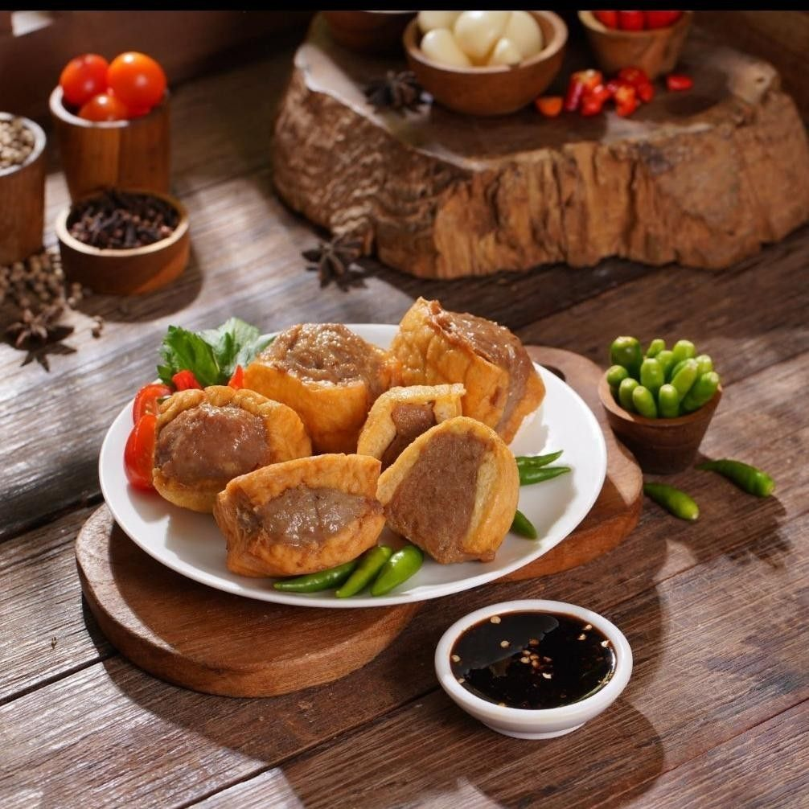

Kota Semarang, surga kuliner yang memadukan cita rasa tradisional dan modern. Dari kelezatan Lumpia yang legendaris, gurihnya Tahu Gimbal, hingga hangatnya Nasi Ayam khas Semarang, setiap sajian menyimpan cerita budaya dan sejarah kota ini. Jelajahi beragam rasa yang menggugah selera dan temukan kenikmatan khas Semarang dalam setiap suapan.